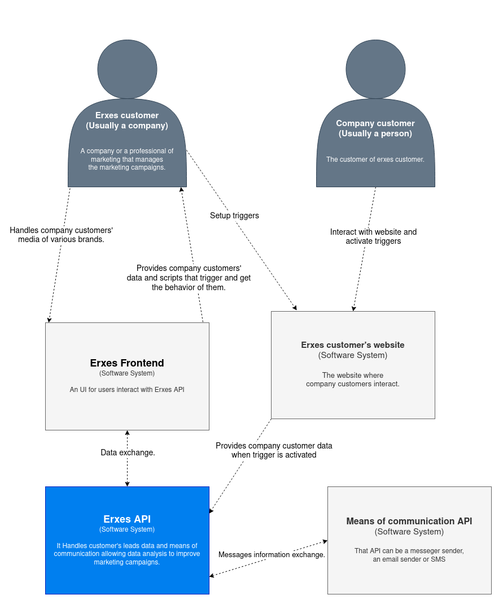
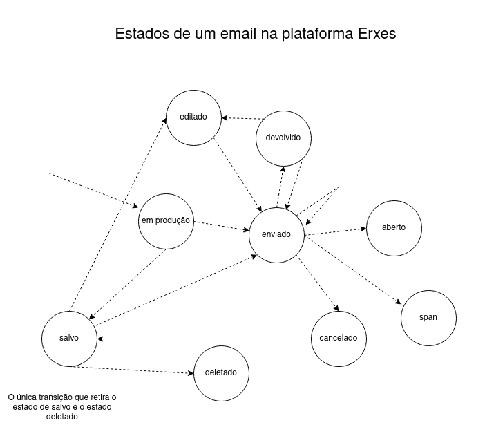

Erxes - Documento arquitetural
Autor
Este artefato foi elaborado por Felipe de Amorim Ferreira.
- Matrícula: 118111800
- Contato: felipe.amorim.ferreira@ccc.ufcg.edu.br
- Projeto documentado: https://github.com/erxes/erxes-api
Descrição Arquitetural – Erxes api
Esta descrição arquitetural é sobre a principal funcionalidade do projeto Erxes, repositório disponível clicando aqui e foi baseada principalmente no modelo C4.
Para deixar claro, neste documento não serão abordados todos os aspectos arquiteturais do projeto. Será destacado a descrição de um serviço específico de integração com plataformas de terceiros, que é a funcionalidade principal do projeto.
Descrição geral sobre o Erxes
O Erxes é um projeto open source e uma plataforma de crescimento em marketing. Criada para atrair clientes mais engajados, ela consegue fazer integrações de forma ilimitada com várias plataformas de atendimento ao cliente dentre elas estão plataformas de mídia, serviços de messeger, email e SMS por várias marcas.
Serviço de integração Erxes
Objetivo geral
Implementar um serviço que consegue integrar qualquer plataforma de interação entre cliente e empresa, tendo como objetivo uma relação mais próxima com o cliente e promover campanhas de marketing de forma mais impactante.
Objetivos Específicos
Queremos obter o máximo de informações sobre os leads que interagem com o sistema e buscar interligar o máximo de canais de comunicação disponibilizados por eles. Com todas essas informações armazenadas conseguimos fazer testes A/B, assim, possibilitando a criação de materiais para campanhas de marketing, que são personalizadas para cada tipo de cliente. Além disso, criar triggers que são acionados quando os clientes interagem com os scripts gerados, dessa forma, permitindo com que a empresa utilizadora do Erxes entre em contato pelos vários meios de comunicação disponibilizados.
Contexto
O contexto do Erxes API abrange os seguintes sistemas e utilizadores:
Erxes customer: Esse é o cliente que está utilizando os serviços do Erxes, ele é responsável por registrar sua marca, interagir com os clientes das marcas através das diversas plataformas e gerar os scripts de triggers para serem configurados nos sites das marcas.
Company customer: Esse é o cliente de uma marca registrada no Erxes, é ele que interage com a página de vendas ou serviços das marcas, consequentemente ativando vários triggers que coletam seus dados e agendam eventos(Como o envio de um email) para o sistema do Erxes.
Erxes Frontend: Esse é o sistema onde o usuário interage com o Erxes, ou seja, a user interface.
Erxes API: É aqui que vai ficar a maior parte da lógica de negócios, o Erxes API vai manipular as integrações de ferramentas para marketing, vai conseguir fazer um “merge” dos dados dos usuarios com várias contas, gerar scripts, disponibilizar dados para o Erxes customer e unificar a comunicação entre a marca e o Company customer.
Erxes customer’s website: Essa é a página de vendas ou de serviços da marca, aqui vão ser configurados os scripts que quando acionados geram dados do usuario ou agendam eventos que são mandados para o Erxes API.
Means of communication API: Essas são as APIs que irão fornecer e receber as mensagens de chat, email ou SMS e que serão unificadas para os Erxes customers interagirem com os Company customers das marcas em um único local.

Containers
Os containers do Erxes API são divididos em três serviços e dois banco de dados, apesar de estarem no mesmo repositório eles são independentes:
API: Aqui é onde todas as requisições da comunicação entre client e Erxes API passam, dentro desse container estão implementadas algumas features que garantem a confiabilidade do sistema, mesmo estando instável ou caindo. Dentre várias features temos: Manipulação de arquivos XLSX para envio e recebimento, serviços cron job, implementação de um histórico de ações do sistema e filas de solução de requisições.
Email Verifier: Este container tem a função de validação de grande parte dos dados fornecidos pelos Company customers, o email verifier vai verificar se os dados são válidos com ajuda de serviços externos e internos, além disso, persistirá esses dados caso forem válidos. Toda essa validação evita dados falsos e/ou duplicados, dessa forma, o banco de dados não é tão requisitado, tanto em memória quanto nas queries.
Engage Email Sender: O Engage Email Sender já mostra sua função pelo nome, ele é reponsável pelo envio dos emails e também lida com o agendamento do envio.

Componentes
Para ilustrar o documento de componentes foi expandido o container da API do tópico passado. Também foram escolhidos os componentes mais relevantes do container, então somente alguns containers foram ilustrados.
General API: Componente responsável por manipular e encaminhar as requisições para os componentes responsáveis por resolvê-las.
File Handler: Tem como papel receber arquivos tanto por stream como diretamente, também é responsável por analisar os arquivos, se estão no formato correto ou se precisam de um “parse”, caso precise de um parse, ele realiza o parse e persiste os dados no elasticsearch.
Commands: Responsável por manipular funções internas do sistema, tal como carregar dados do sistema e reiniciar serviços que não foram corretamente iniciados.
User Auth: Responsável por validar as ações do usuário dentro do sistema, ele verifica se os dados de autenticação fornecidos usuário permitem ele realizar determinada ação dentro do sistema.
Message Broker: Componente responsável pela tradução de mensagens entre protocolos formais de mensagens. Isto permite que serviços interdependentes “falem” uns com os outros diretamente, mesmo que tenham sido escritos em línguas diferentes ou implementados em plataformas diferentes.
Cron jobs: Responsável por executar uma tarefa recorrente repetidamente em algum tempo mais tarde. A ação de dar um comando para agendar uma tarefa para um tempo específico e de forma repetida é responsabilidade deste componente.

Visão de informação
As trocas de mensagens, em companhia dos dados gerados pela interação dos clientes das marcas, exercem um papel primordial para o funcionamento da aplicação. Com eles nós conseguimos gerar relatórios dos comportamentos dos usuários e promover várias campanhas de marketing mais acertivas. Abaixo ilustro os estados de uma email enviado pelo sistema.
Descrição da sequência de estados:
Primeiro o email começa a ser produzido pelo usuário, em seguida ele pode ser enviado ou salvo. Caso o email seja enviado, ele pode ser aberto, ir para span, ser cancelado, ou devolvido. Ao cancelar o envio ele é automaticamente salvo, e ao ser salvo ele pode ser deletado. Quando o email é devolvido ele pode ser reenviado ou editado.
